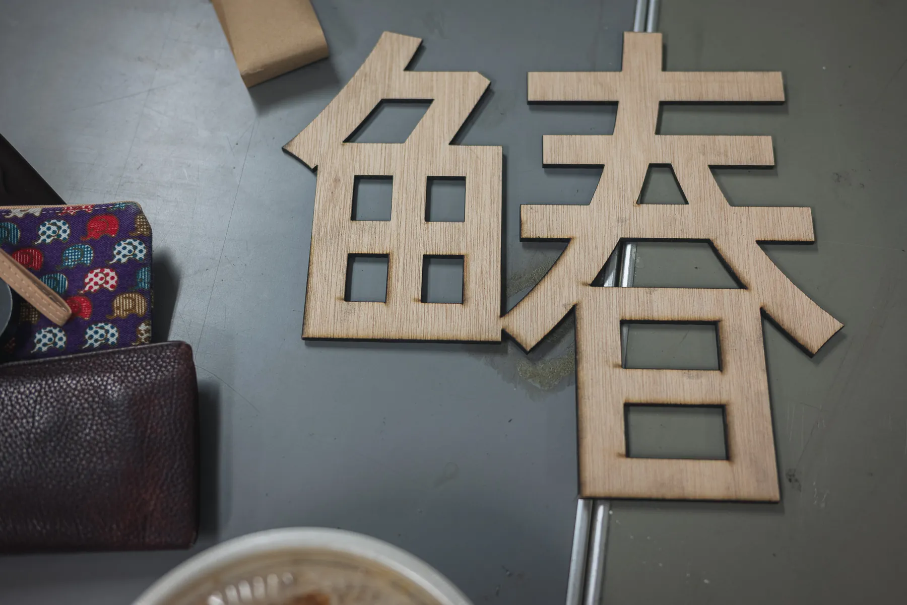
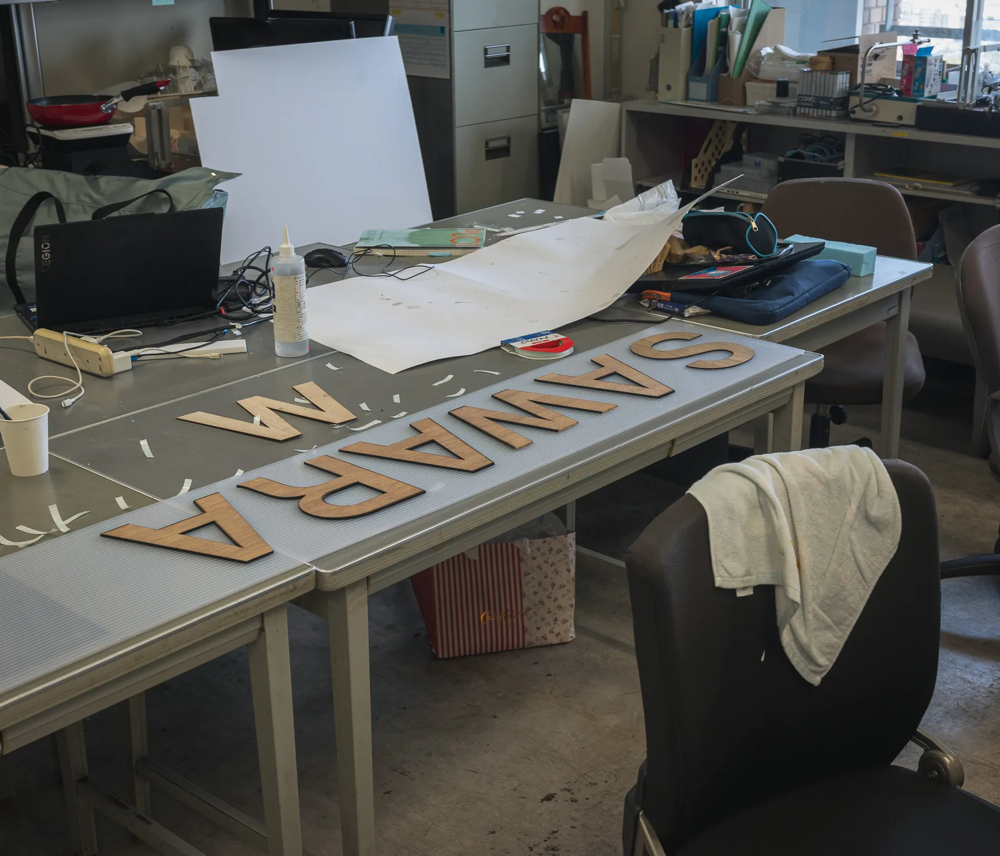
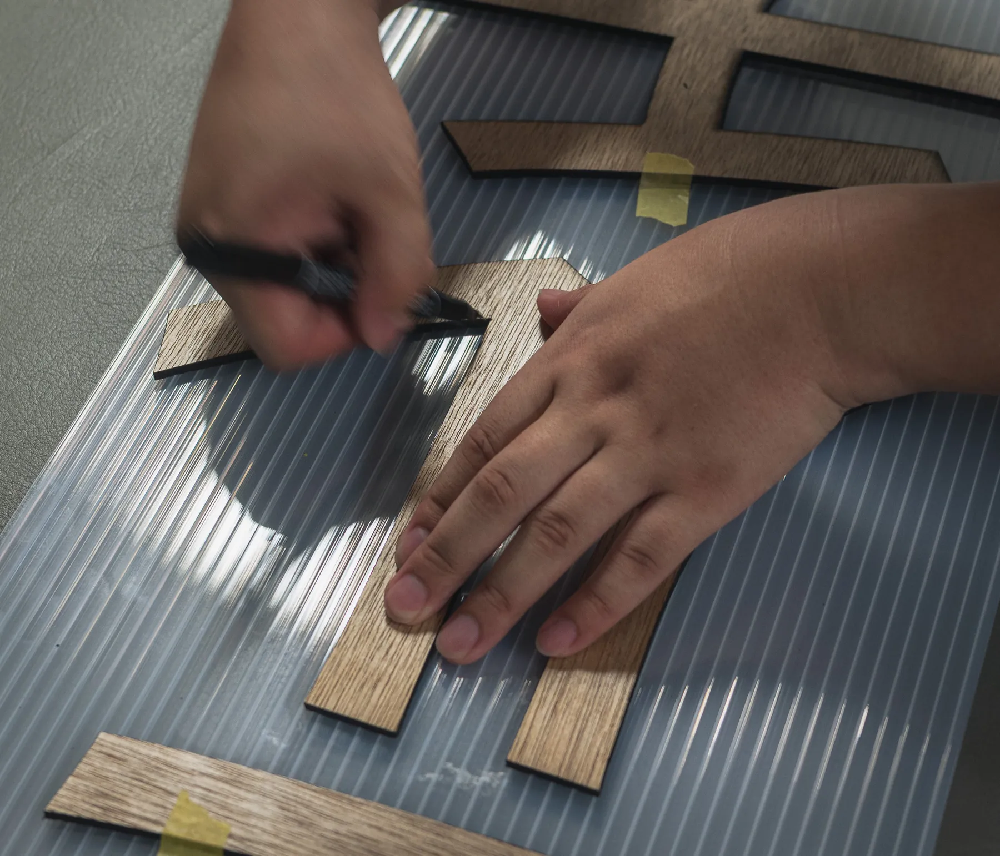
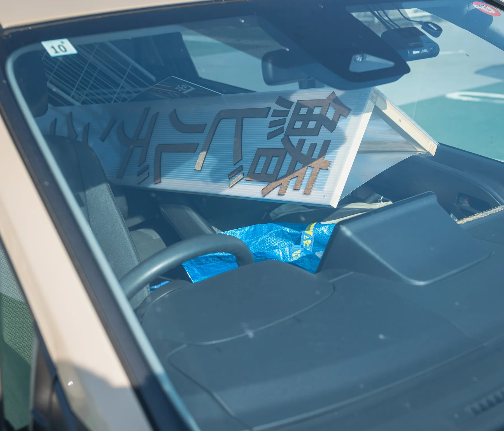
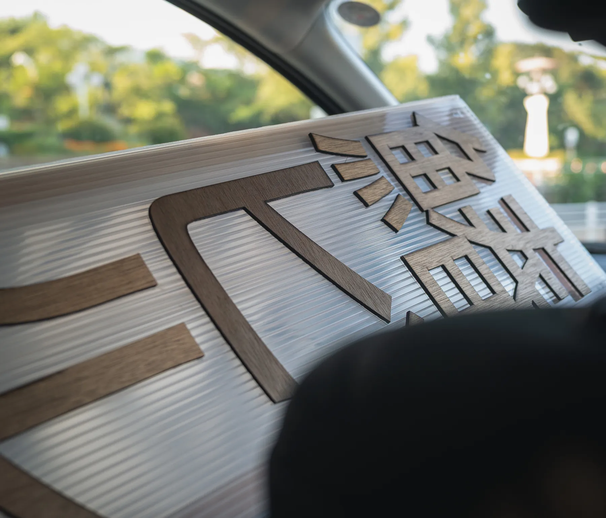
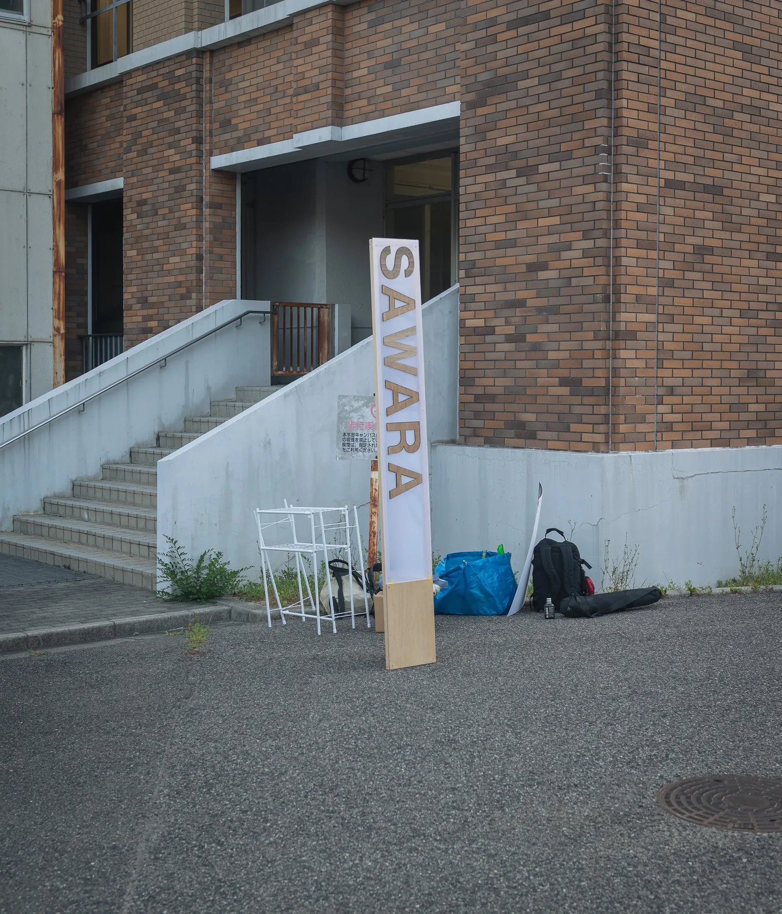
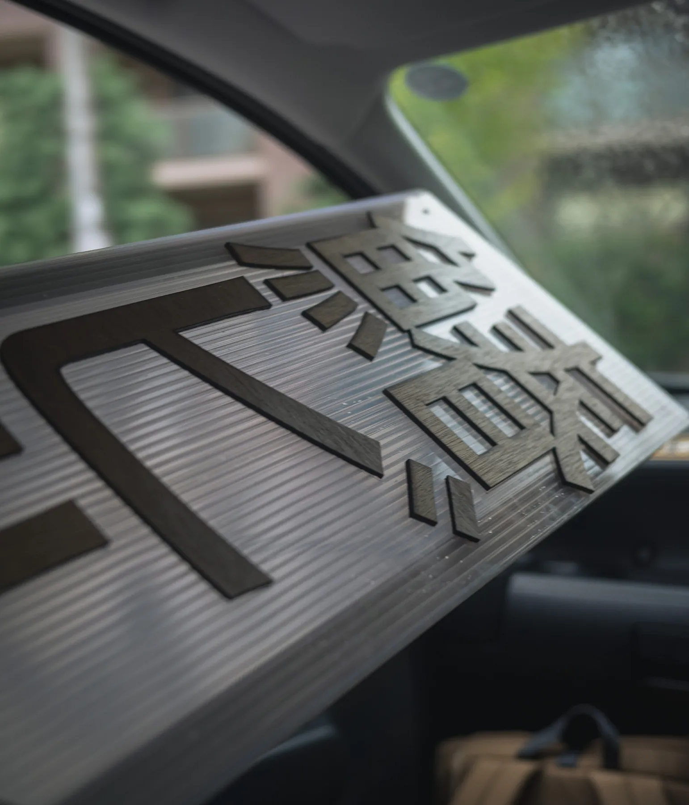
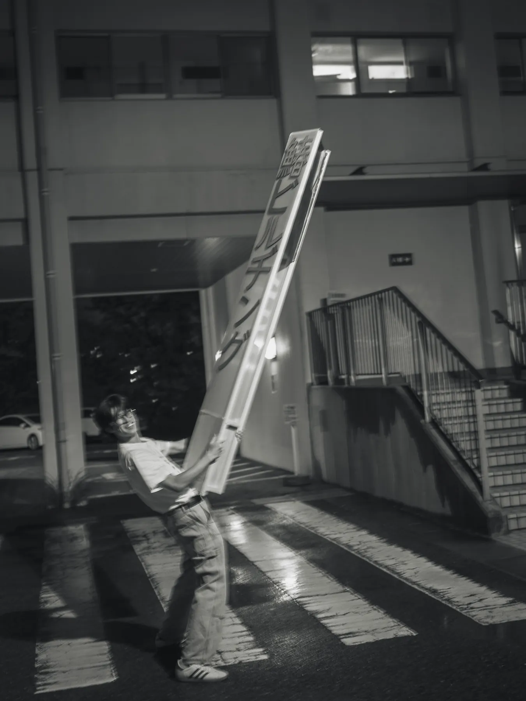

鰆ビルの素 2026
ZINEフェスに出展するにあたって作成した塔。
家畜のようにブースを並べられるので、どうにかしてそこから抜きんでた豚にならなければならない。
どうしようかと考える。遠くから、大谷先生のささやきが聞こえてくる。
「ダレヨリモタカク…」
天井はきっと2400mmくらいはあるだろう。高さは2200mmに設定(ギリギリ車にも入る)。
L字にして、ブースの机にうまく嵌め込めるように。北岡くんが好きなポリカを使おう。
「鰆ビルヂング」の文字をなるべく大きくしたいなあ。そんなことを考えていたらこんなものが完成した。
図面なしで作ったので、分からない。
本当は中に照明を仕込んで、虫を集めるように客を集めようと画策したが、普通にコンセントが使えなくてただのポリカになった。
これは今後の課題である。賄賂と電源購入、どちらが経済的だろうか。
これまでの二回のZINEフェスでは、こいつが大活躍してくれていると思う。
やはり僕たちが一番高く、そしてみんなの頭に「鰆ビルってなに？」という疑問を浮かべてくれる。
まだギリギリ賞味期限は切れていない気がするが、もうそんなに先が長くもないだろう。
次の矢を放たなくてはならない。巨大ビル模型(S=1:20)を作ろうかなと思っている。
とりあえず技術の無さは、熱量みたいなので圧倒していくほかないのだ。
でもやっぱり、なんかよく分からないけれども、一本こうやってそびえ立っているのは、なんだか安心するし、意外と大事な気がする。
まだビルは建っていないけれども、なんだか本当に建つかもな…と、こいつを遠くから眺めていると、思ったりする。
［制作：北岡智也 芝﨑琉 小倉奏音 舟木健太郎］







